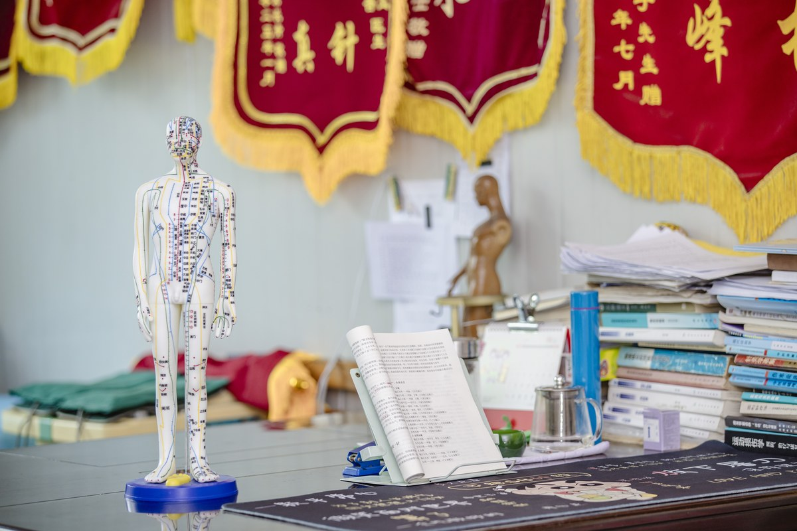
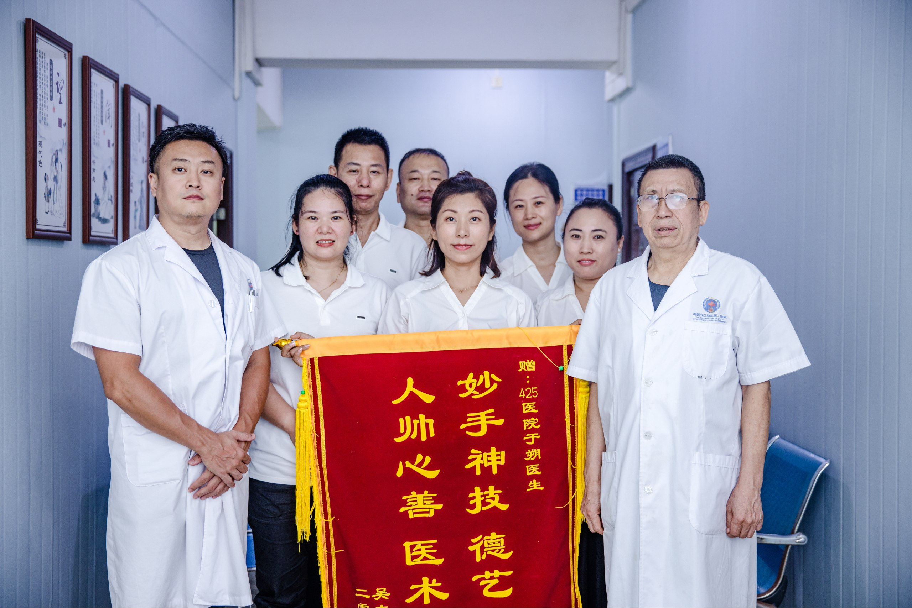
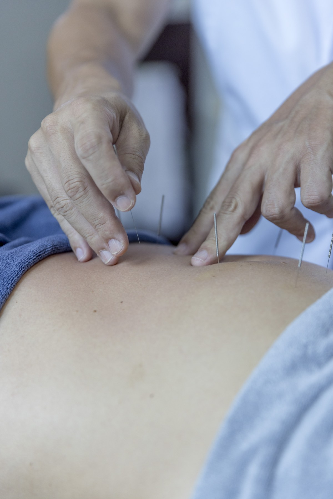
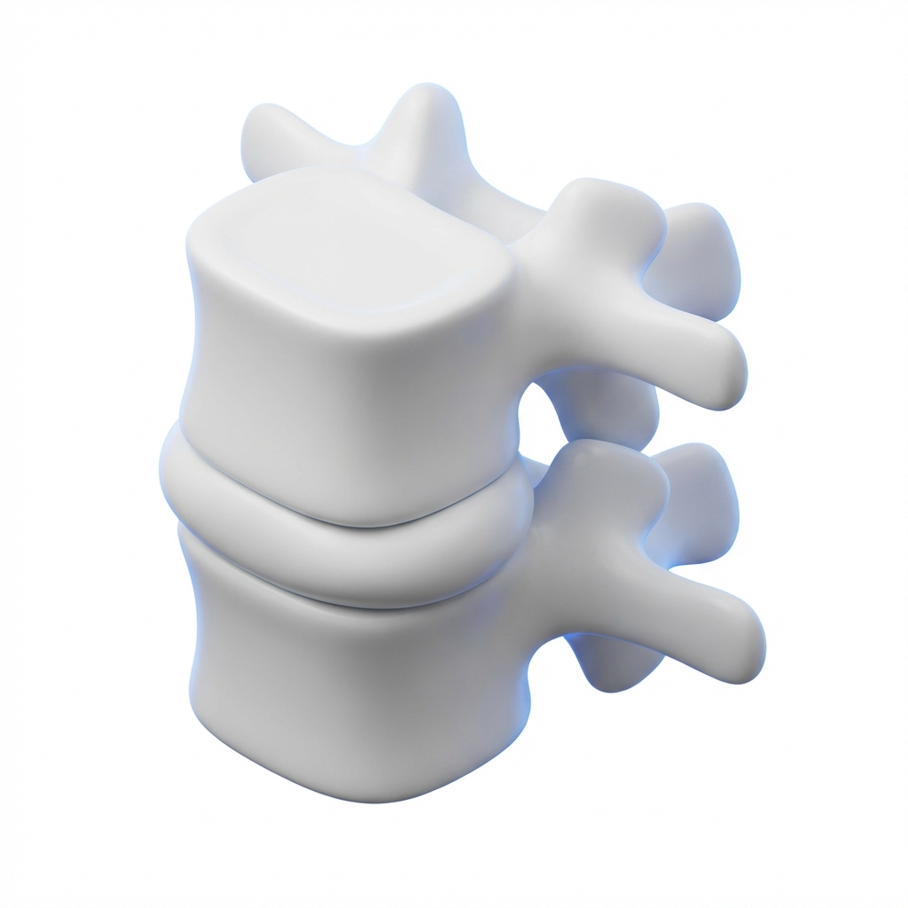

Государственный стандарт. Только сертифицированные методики.
НЕ ОТКЛАДЫВАЙТЕ
ЗДОРОВЬЕ НА ПОТОМ
Запись на приём в два клика
на нашем сайте.
hospital1946.ru
info@hospital1946.ru
+86 198 7270 7491
Русскоязычный отдел
Государственный Военный Госпиталь • Основан в 1946
Традиционная китайская медицина.
Остров Хайнань, Санья.
Китайская медицина ищет причину болезни, а не глушит симптомы таблетками. Врач лечит не отдельный орган — он работает с организмом целиком.
Этим методам больше двух тысяч лет. За это время они прошли проверку, которую не прошло ни одно современное лекарство — проверку временем и сотнями миллионов пациентов.
В нашем госпитале традиционные методы работают вместе с современным оборудованием: КТ, лаборатория, функциональная диагностика. Старое знание плюс новые технологии — именно эта комбинация даёт результат.


Опытному врачу не нужен аппарат, чтобы найти проблему. Руки профессора со стажем более 20 лет чувствуют то, что не покажет снимок: начальный фиброз, глубокие спазмы, скрытые триггерные точки в мышцах.
Так диагностировали задолго до появления томографов. Пальпация — основа первичной оценки в китайской ортопедии на протяжении тысячелетий.
Когда нужно — подключаем аппаратные исследования: КТ, рентген, лабораторные анализы. Но начинается всё с рук.
Метод на стыке акупунктуры и микрохирургии. Тонкий стержень (0,4–1,2 мм) с микролезвием на конце проникает к очагу через прокол менее 2 мм и рассекает спайки, рубцы, защемления нервов.
Разработан в 1976 году профессором Чжу Ханьчжаном. С 2003 года включён в национальный стандарт лечения в клиниках высшей категории КНР.
Что это значит для пациента:
Показания: грыжи, протрузии, остеохондроз, артрозы, эпикондилит, пяточная шпора, миофасциальные боли, спаечные процессы.
